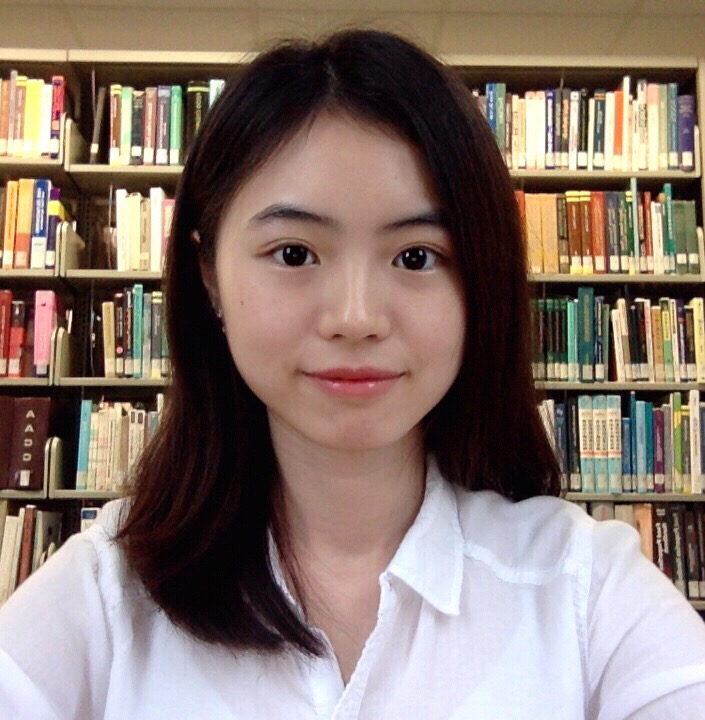
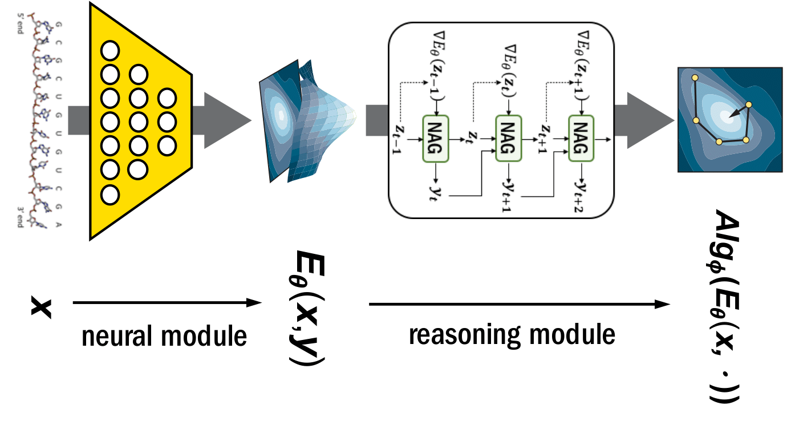
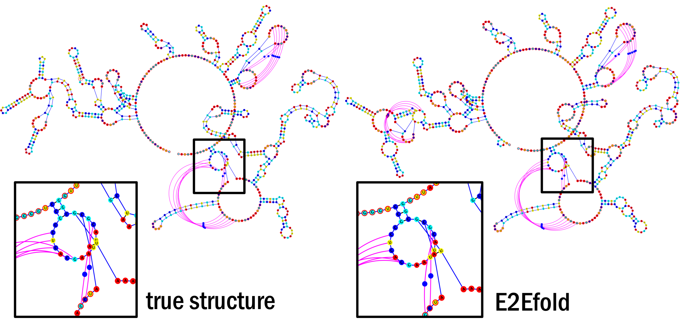
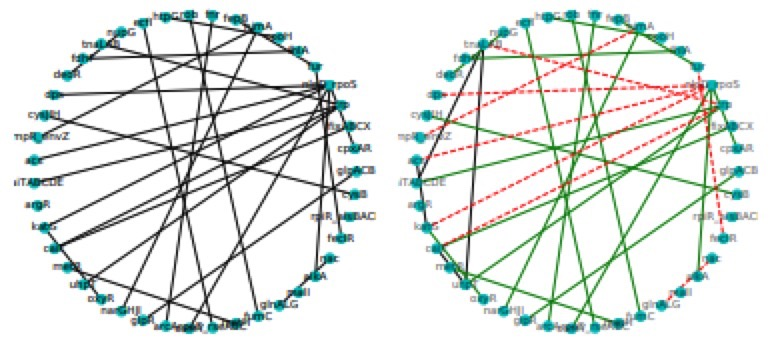
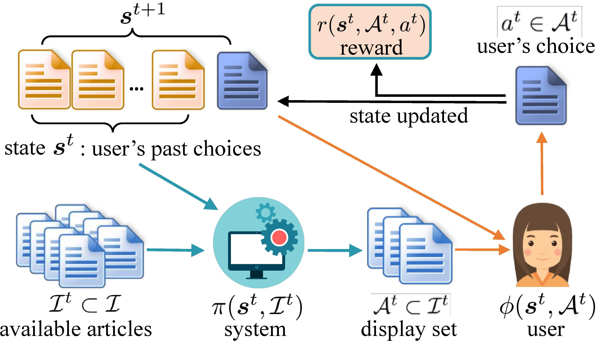
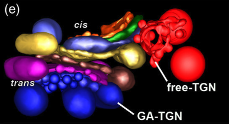
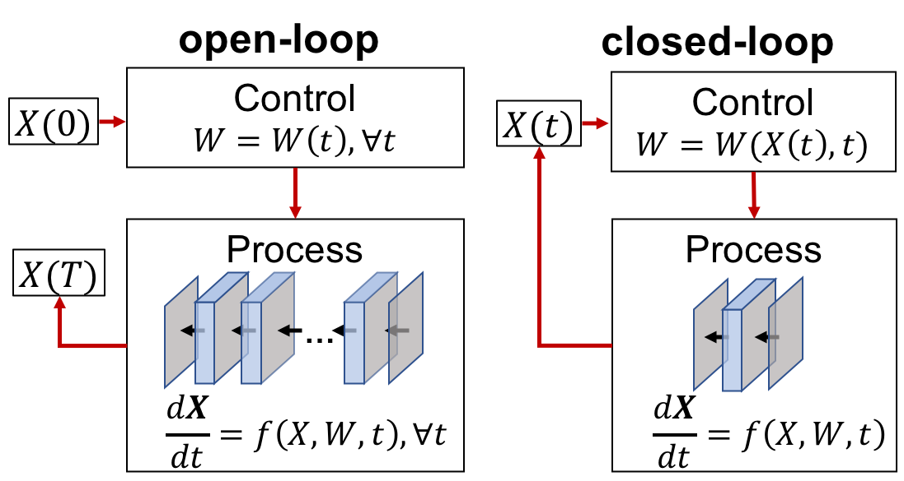
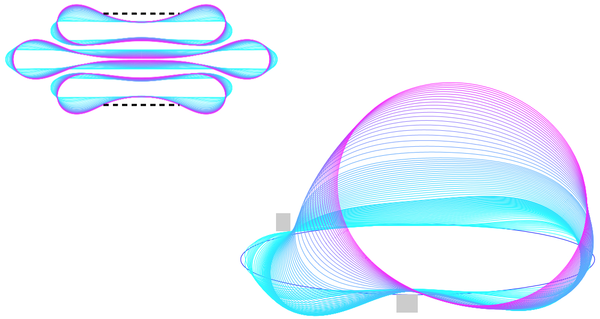

<!DOCTYPE html>
<html lang="en">
	<head>
		<meta charset="utf-8">
		<meta name="viewport" content="width=device-width, initial-scale=1" />
		
		<script async src="https://www.googletagmanager.com/gtag/js?id=UA-136339984-2"></script>
		<script>
		window.dataLayer = window.dataLayer || [];
		function gtag(){dataLayer.push(arguments);}
		gtag('js', new Date());

		gtag('config', 'UA-136339984-2');
		</script>
		<title>Xinshi Chen - Georgia Tech - Homepage</title>
		<link rel="alternate" type="application/rss+xml" title="RSS" href="index.xml">
		<link rel="canonical" href="./">
		
		<link rel="shortcut icon" type="image/png" href="apple-touch-icon-precomposed.png">
		
		
		<meta name="generator" content="Hugo 0.53" />

		
		

		
		<link rel="stylesheet" href="css/tachyons.min.css" />
		<link rel="stylesheet" href="css/story.css" />
		<link rel="stylesheet" href="css/descartes.css" />
		
		<link rel="stylesheet" href="https://use.fontawesome.com/releases/v5.3.1/css/all.css" integrity="sha384-mzrmE5qonljUremFsqc01SB46JvROS7bZs3IO2EmfFsd15uHvIt+Y8vEf7N7fWAU" crossorigin="anonymous">
		<link href="https://fonts.googleapis.com/css?family=Quattrocento+Sans:400,400i,700,700i|Quattrocento:400,700|Spectral:400,400i,700,700i&amp;subset=latin-ext" rel="stylesheet">
		

		<script src="https://cdnjs.cloudflare.com/ajax/libs/jquery/3.3.1/jquery.min.js"></script>
		
		<script src="js/story.js"></script>

	</head>
	<body class="ma0 bg-white  page-kind-home is-page-false ">
		
		<header class="cover bg-top" style="background-image: url('img/header_taiwan.jpg'); background-size: 100% 100%; background-position: center;">
			<div class="">

				<nav class="hide-print sans-serif  border-box pa3 ph5-l">
					<a href="" title="Home">
						
					</a>
					<div class="fr h2 pv2 tr">
						<a class="link f5 ml2 dim near-white" href="./#award">Award</a>
						<a class="link f5 ml2 dim near-white" href="./#education">Education</a>
						<a class="link f5 ml2 dim near-white" href="./#experience">Experience</a>
						<a class="link f5 ml2 dim near-white" href="./#extra-curriculum">Extra-Curriculum</a>
						<a class="link f5 ml2 dim near-white" href="./#research">Research</a>
						<a class="link f5 ml2 dim near-white" href="./#teaching">Teaching</a>
						<a class="link f5 ml2 dim near-white fas fa-rss-square" href="index.xml" title="RSS Feed"></a>
						<a class="link f5 ml2 dim near-white fas fa-search" href="search/" role="search" title="Search"></a>
					</div>
				</nav>

				<div id="hdr" class="tc-l pv4-ns pv5-l pv2 ph3 ph4-ns">
					<h1 class="near-white mt1-ns f2 fw3 mb0 mt0 lh-title">&nbsp; &nbsp;</h1>
					<h2 class="near-white mt3-l mb4-l fw1 f6 f3-l measure-wide-l center lh-copy mt2 mb3">&nbsp;
						
						
							
						
					</h2>
				</div>

				
				
				
				

			</div>
		</header>
		
		<main role="main">
		
<main aria-role="main">
  <div class="center bg-white br-3 pv1 ph5 lh-copy f5 nested-links mw8">
     
     
      <article>
        

<h2 id="about-me">About Me</h2>

<p><strong>Xinshi Chen (陈心诗)</strong></p>

<p>
I am currently a Machine Learning Ph.D. student at <a href="http://ml.gatech.edu/">Georgia Tech</a> under the supervision of <a href="https://www.cc.gatech.edu/~lsong/">Prof. Le Song</a>. I am interested in principled machine learning. My current research focuses on data-driven algorithm design and the intersection of probabilistic graphical model and deep learning on structured data. Besides, I am interested in applications in the area of structural and computational biology.</p>

<p>I received my B.S. and M.Phil in Mathematics at the Chinese University of Hong Kong under the supervision of <a href="https://www.math.cuhk.edu.hk/~tschung/">Prof. Eric Chung</a>. I have also spent time at Oak Ridge National Laboratory  and Ant Financial as a research intern. This summer I will work with Facebook as a remote research intern.</p>

<p><strong>Email:</strong>  xinshi [dot] chen [at] gatech [dot] edu<br />
<strong>Address:</strong> CODA Building, 11th Floor, Machine Learning Center, Georgia Tech<br />
<a href="./CV_xinshi.pdf">My CV</a></p>

<h2 id="publication">Publication</h2>

<h3 id="underreview">Underreview</h3>

<p>
 <br />
<strong>Understanding Deep Architectures With Reasoning Layer</strong><br />
<u>Xinshi Chen</u>, Yufei Zhang, Christoph Reisinger, Le Song<br />
<a href="https://arxiv.org/pdf/2006.13401.pdf">arxiv</a><br />
<br />
</p>

<h3 id="conference-journal">Conference &amp; Journal</h3>

<p>
<strong>Learning To Stop While Learning To Predict</strong><br />
<u>Xinshi Chen</u>, Hanjun Dai, Yu Li, Xin Gao, Le Song<br />
<em>International Conference on Machine Learning</em> (<strong>ICML</strong>) 2020<br />
<a href="./papers/paper/l2stop.pdf">paper</a> | <a href="https://github.com/xinshi-chen/l2stop">github</a> | <a href="https://icml.cc/virtual/2020/poster/6279">talk</a> | <a href="./papers/slides/icml2020_l2stop.pdf">slides</a></p>

<p>
<strong>RNA Secondary Structure Prediction By Learning Unrolled Algorithms</strong><br />
<u>Xinshi Chen</u>*, Yu Li*, Ramzan Umarov, Xin Gao, Le Song<br />
<em>International Conference on Learning Representations</em> (<strong>ICLR</strong>) 2020, <span style="color:blue"><strong>Oral</strong></span>.<br />
<a href="https://openreview.net/pdf?id=S1eALyrYDH">paper</a> | <a href="https://github.com/ml4bio/e2efold">github</a> | <a href="https://iclr.cc/virtual_2020/poster_S1eALyrYDH.html">talk</a> | <a href="./papers/slides/iclr2020-e2efold.pdf">slides</a> | <a href="https://www.cc.gatech.edu/news/633633/machine-learning-tool-may-help-us-better-understand-rna-viruses">news</a></p>

<p>
<strong>GLAD: Learning Sparse Graph Recovery</strong><br />
Harsh Shrivastava, <u>Xinshi Chen</u>, Binghong Chen, Guanghui Lan, Srinivas Aluru, Han Liu, Le Song<br />
<em>International Conference on Learning Representations</em> (<strong>ICLR</strong>) 2020<br />
<a href="https://openreview.net/pdf?id=BkxpMTEtPB">paper</a> | <a href="https://github.com/Harshs27/GLAD">github</a> | <a href="https://iclr.cc/virtual_2020/poster_BkxpMTEtPB.html">talk</a></p>

<p>
<strong>Efficient Probabilistic Logic Reasoning with Graph Neural Networks</strong><br />
Yuyu Zhang, <u>Xinshi Chen</u>, Yuan Yang, Arun Ramamurthy, Bo Li, Yuan Qi, Le Song<br />
<em>International Conference on Learning Representations</em> (<strong>ICLR</strong>) 2020<br />
<a href="https://openreview.net/pdf?id=rJg76kStwH">paper</a> | <a href="https://github.com/expressGNN/ExpressGNN">github</a> | <a href="https://iclr.cc/virtual_2020/poster_rJg76kStwH.html">talk</a></p>

<p><video style = "float:left;position: relative; width: 220px;height: 100px; margin-right: 20px;margin-top: 0px" autoplay loop>
  <source src="./video/mpf2.mp4" type="video/mp4">
</video>
<strong>Particle Flow Bayes&rsquo; Rule</strong><br />
<u>Xinshi Chen</u>*, Hanjun Dai*, Le Song<br />
<em>International Conference on Machine Learning</em> (<strong>ICML</strong>) 2019<br />
<a href="http://proceedings.mlr.press/v97/chen19c/chen19c.pdf">paper</a> | <a href="https://github.com/xinshi-chen/ParticleFlowBayesRule">github</a> | <a href="https://icerm.brown.edu/video_archive/?play=1819">talk</a> | <a href="./papers/slides/icml2019_pfbr.pdf">slides</a> | <a href="./papers/posters/icml2019_pfbr.pdf">poster</a></p>

<p>
<strong>Generative Adversarial User Model for Reinforcement Learning Based Recommendation System</strong><br />
<u>Xinshi Chen</u>, Shuang Li, Hui Li, Shaohua Jiang, Yuan Qi, Le Song<br />
<em>International Conference on Machine Learning</em> (<strong>ICML</strong>) 2019<br />
<a href="http://proceedings.mlr.press/v97/chen19f/chen19f.pdf">paper</a> | <a href="https://github.com/xinshi-chen/GenerativeAdversarialUserModel">github</a> | <a href="https://slideslive.com/38916813/time-series">talk</a> | <a href="./papers/slides/icml2019_user_model.pdf">slides</a> | <a href="./papers/posters/icml2019_user_model.pdf">poster</a></p>

<p>
<strong>A distinct class of vesicles derived from the trans-Golgi mediates secretion of xylogalacturonan in the root border cell</strong><br />
Pengfei Wang, <u>Xinshi Chen</u>, Cameron Goldbeck, Eric Chung, Byung-Ho Kang<br />
<em>The Plant Journal</em> 2017<br />
<a href="https://onlinelibrary.wiley.com/doi/epdf/10.1111/tpj.13704">paper</a><br />
&nbsp;</p>

<h3 id="workshop-preprint">Workshop &amp; Preprint</h3>

<!--  -->

<p><strong>Review: Ordinary Differential Equations For Deep Learning</strong><br />
Xinshi Chen<br />
<em>Continually updating</em> [<a href="https://arxiv.org/pdf/1911.00502.pdf">arxiv</a>]</p>

<!--  -->

<p><strong>Can Graph Neural Networks Help Logic Reasoning?</strong><br />
Yuyu Zhang*, <u>Xinshi Chen</u>*, Yuan Yang*, Arun Ramamurthy, Bo Li, Yuan Qi, Le Song<br />
<em>NIPS 2019 Workshop in KR2ML</em> [<a href="https://arxiv.org/pdf/1906.02111.pdf">arxiv</a>] [<a href="https://drive.google.com/file/d/18YadGde5_nSychxz-7nIgPDnfPgvdIqP/view">poster</a>]</p>

<!--  -->

<p><strong>Parametric Finite Element Method for Shape Optimization applied to Golgi Stack</strong><br />
CUHK Theses &amp; Dissertations Collection 2017 [<a href="https://arxiv.org/pdf/1902.00619.pdf">arxiv</a>]<br />
Committee: Prof. <a href="https://www.math.cuhk.edu.hk/~rchan/">Raymond Honfu Chan</a>, Prof. <a href="https://www.math.cuhk.edu.hk/~lmlui/">Ronald Lok Ming Lui</a>, Prof. <a href="https://www.math.cuhk.edu.hk/~tschung/">Eric Chung</a><br />
&nbsp;</p>

<h2 id="recent-activities">Recent Activities</h2>

<div style="height:317px;overflow-y:auto">
<strong>June 2020</strong> &mdash; in <u><em>ICML 2020</em></u>, I presented our work  &ldquo;Learning To Stop While Learning To Predict&rdquo; virtually. Please check the details <a href="https://icml.cc/virtual/2020/poster/6279">here</a>, and stay safe!<br />
<strong>April 2020</strong> &mdash; in <u><em>ICLR 2020</em></u>, three papers are presented virtually. Please check the details <a href="https://iclr.cc/virtual/papers.html?filter=authors&search=Xinshi+Chen">here</a>, and stay safe!<br />
<strong>June 2019</strong> &mdash; in <u><em>ICML 2019</em></u>, I presented our works &ldquo;Particle Flow Bayes&rsquo; Rule&rdquo; [<a href="https://slideslive.com/38917749/approximate-inference">video</a>] and &ldquo;Generative Adversarial User Model for Reinforcement Learning Based Recommendation System&rdquo; [<a href="https://slideslive.com/38916813/time-series">video</a>].<br />
<strong>May 2019</strong> &mdash; I passed the ML <u><em>PhD qualifying exam</em></u> at GaTech! (Submitted review on the topic: <a href="https://arxiv.org/pdf/1911.00502.pdf">Ordinary Differential Equations For Deep Learning</a>, and the <a href="./papers/slides/qual_oral.pptx">slides</a> for oral exam.)<br />
<strong>March 2019</strong> &mdash; in the <u><em>HotCSE seminar</em></u> at GaTech, I presented our work &ldquo;Meta Particle Flow for Sequential Bayesian Inference&rdquo; [<a href="http://www.hotcse.gatech.edu/2019/Xinshi-Chen/index.html">introduction</a>].<br />
<strong>Jan. 2019</strong> &mdash; in the <u><em>Scientific Machine Learning Workshop</em></u> at ICERM, I presented a poster for our work &ldquo;Particle Flow Bayes&rsquo; Rule&rdquo;.<br />
<strong>Nov. 2018</strong> &mdash; in the <u><em>GT MAP Seminar</em></u> at GaTech, I presented &ldquo;Sequential Monte Carlo Problem With Mass Transportation&rdquo;, which is the preliminary version for our paper &ldquo;Particle Flow Bayes&rsquo; Rule&rdquo;.<br />
<strong>July 2018</strong> &mdash; in the <u><em>Workshop on Differential Equations on Networks and Related Problems</em></u> at Zhejiang University, I presented our work &ldquo;A no-regret user model&rdquo;, which is the preliminary version of our paper &ldquo;Generative Adversarial User Model for Reinforcement Learning Based Recommendation System&rdquo;.<br />
<strong>March 2017</strong> &mdash; in the <u><em>2017 Imaging Science Camp</em></u> at USUTech, I presented a part of my thesis &ldquo;Parametric FEM for shape optimization applied to Golgi stacks&rdquo;.<br />
<strong>Dec 2016</strong> &mdash; in the <u><em>Ceremony of Paul Erdös Award</em></u> (from World Federation of National Mathematics
Competitions) presented to Prof. Kar-Ping Shum [<a href="https://www.cpr.cuhk.edu.hk/en/press_detail.php?id=2465">media</a>], I was fortunate to serve as the MC!<br />
<strong>Nov 2016</strong> &mdash; in the <u><em>3rd AoE Symposium on Organelle Biogenesis and Function</em></u>, I presented our work &ldquo;A Mathematical Simulation To The Shape Evolution Of Med-/Trans- Golgi Cisternae&rdquo;, a part of our later published paper.
</div>

<h2 id="biography">Biography</h2>

<p style="text-align:left;">
<em>M.Phil. (Master of Philosophy) in Mathematics</em>
<span style="float:right;"><em>September 2015 - July 2017</em></span><br />
&bull; The Chinese University of Hong Kong (Advisor: <a href="https://arxiv.org/pdf/1902.00619.pdf">Prof. Eric Chung</a>)<br />
&bull; Thesis: Parametric Finite Element Method for Shape Optimization [<a href="https://arxiv.org/pdf/1902.00619.pdf">PDF</a>]<br />
</p>

<p style="text-align:left;">
<em>B.Sc. in Mathematics</em>
<span style="float:right;"><em>September 2011 - July 2015</em></span><br />
&bull; The Chinese University of Hong Kong<br />
&bull; Exchange in math department at <em>ETH Zurich, Switzerland</em> <span style="float:right;"><em>January 2014 - June 2014</em></span>
</p>

<h2 id="experience">Experience</h2>

<p style="text-align:left;">
<em>Research Intern</em>
<span style="float:right;"><em>June 2020 - August 2020</em></span><br />
&bull; Facebook AI, Menlo Park.
</p>

<p style="text-align:left;">
<em>Research Assistant or Teaching Assistant</em>
<span style="float:right;"><em>September 2017 - present</em></span><br />
&bull; Teach in School of Mathematics, Georgia Institute of Technology.<br />
&bull; Work in Machine Learning Group, supervised by Prof. Le Song.
</p>

<p style="text-align:left;">
<em>Research Intern</em>
<span style="float:right;"><em>June 2018 - August 2018</em></span><br />
&bull; AI department, Ant Financial (affiliate company of Alibaba), Hangzhou, China
</p>

<p style="text-align:left;">
<em>Teaching Assistant</em>
<span style="float:right;"><em>August 2015 - June 2017</em></span><br />
&bull; Department of Mathematics, The Chinese University of Hong Kong
</p>

<p style="text-align:left;">
<em>REU Research Intern</em>
<span style="float:right;"><em>June 2014 - August 2014</em></span><br />
&bull; Oak Ridge National Laboratory, United States<br />
&bull; Mentor: Dr. Joshua Fu, Dr. John Drake and Dr. Kwai Wong<br />
&bull; Solve diffusion-convection equation based on finite element method.<br />
&bull; Title: Modeling Chemical Transport with Galerkin Methods[<a href="https://www.jics.utk.edu/csure-reu/csure14/projects">Project link</a>]
</p>

<h2 id="academic-service">Academic Service</h2>

<p>&bull; Program Committee / Reviewer: AAAI 2020, ICLR 2020, AISTAT 2020, MSML 2020, NIPS 2020</p>

<h2 id="teaching">Teaching</h2>

<p><em>School of Mathematics, GaTech</em><br />
&bull; MATH2551 Multivariable Calculus, (Recitation Teaching), Spring 2018 &amp; Fall 2017</p>

<p><em>Department of Mathematics, CUHK</em><br />
&bull; MATH3240 Numerical Methods for Differential Equations, (Tutorial), Spring 2016<br />
&bull; MATH3230 Numerical Analysis, (Tutorial), Fall 2016 &amp; Fall 2015<br />
&bull; MATH2010 Advanced Calculus I, (Tutorial), Spring 2016<br />
&bull; MATH1510 Calculus for Engineers, (Tutorial), Fall 2015</p>

<p><em>Enrichment Programme for Young Mathematics Talents, Hong Kong</em><br />
&bull; SAYT1054 Mathematical Analysis, (Discussion Group), Fall 2013</p>

<h2 id="award">Award</h2>

<p>&bull; ICLR Travel Award, 2020<br />
&bull; ICML Travel Award, 2019<br />
&bull; Postgraduate Studentship, CUHK, 2015-2017<br />
&bull; Best oral presentation in 3rd AoE(Area of Excellence) Symposium, 2016<br />
&bull; Professor Charles K. Kao Research Scholarship, 2013-14<br />
&bull; College Head&rsquo;s list - for outstanding academic performance, 2013-14<br />
&bull; Undergraduate Exchange Scholarship, 2013</p>

<h2 id="extra-curriculum">Extra-Curriculum</h2>

<p><em>Volunteer Experience</em><br />
&bull; Bronze Award for Volunteer Service (Individual), 2012, <em>issued by HK Social Welfare Department</em><br />
&bull; Gold Award for Volunteer Service (Group), 2012, <em>issued by HK Social Welfare Department</em><br />
&bull; Overall Best Mainland Service Project 2011-12, <em>Caring Heart Community Service Project Scheme</em></p>

<p><em>Certificates</em><br />
&bull;  Completion of the Mental Health First Aid Course, <em>certified by MHFA International</em><br />
&bull;  Advanced Open Water Diver, <em>certified by PADI</em></p>

      </article>
     
  </div>
</main>

		</main>
		
				<div class="hide-print sans-serif f6 f5-l mt5 ph3 pb6 center nested-copy-line-height lh-copy nested-links mw-100 measure-wide">
		<div class="about-the-author">
		
			
				
			
		
		</div>
		
	</div>

		
		
<footer class="w-100 sans-serif" role="contentinfo">
        <nav class="w-third-l pb3 f6 center db" role="navigation">
</nav>
</footer>

		
		<footer class="hide-print sans-serif f6 fw1 bg-black near-white bottom-0 w-100 pa3" role="contentinfo">
			<p class="w-50 near-white">
				&copy; 2020 Xinshi Chen
			</p>
		</footer>
		
	
	
	</body>
</html>